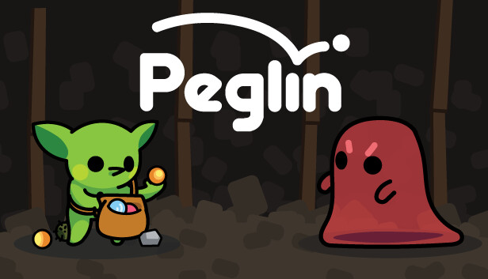

I play a variety of games, most of which include roguelikes. I also play minecraft, pokemon and other popular games
The books I read are usually based on mythologies, such as Percy Jackson. I also enjoy detective books, such as Sherlock Holmes